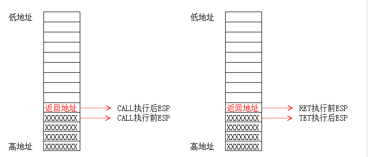
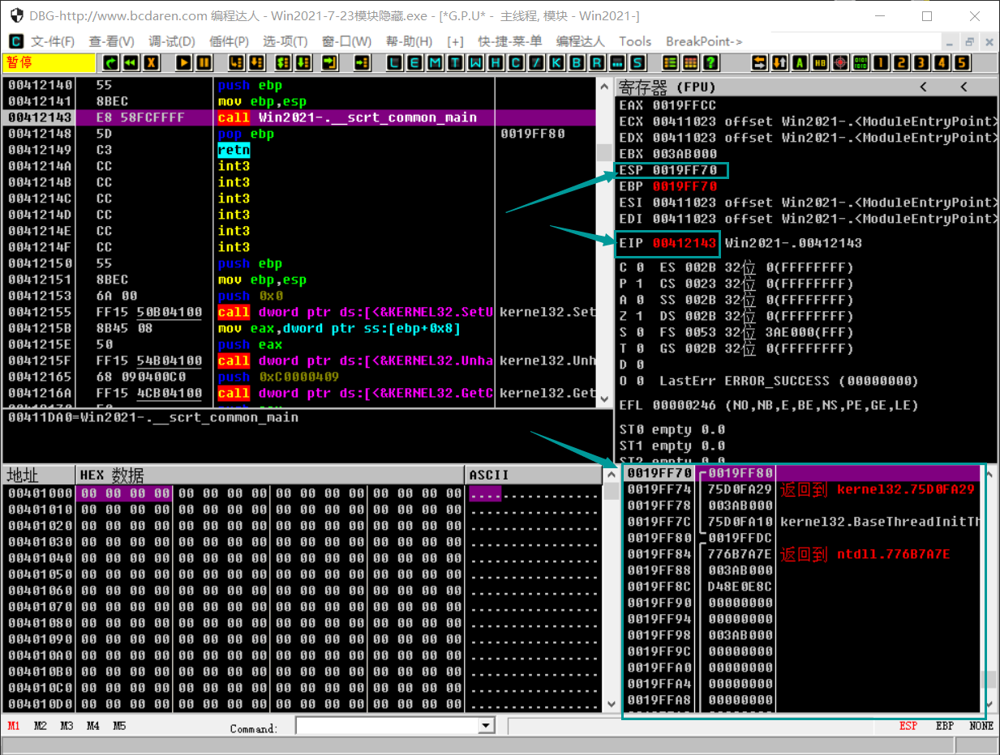
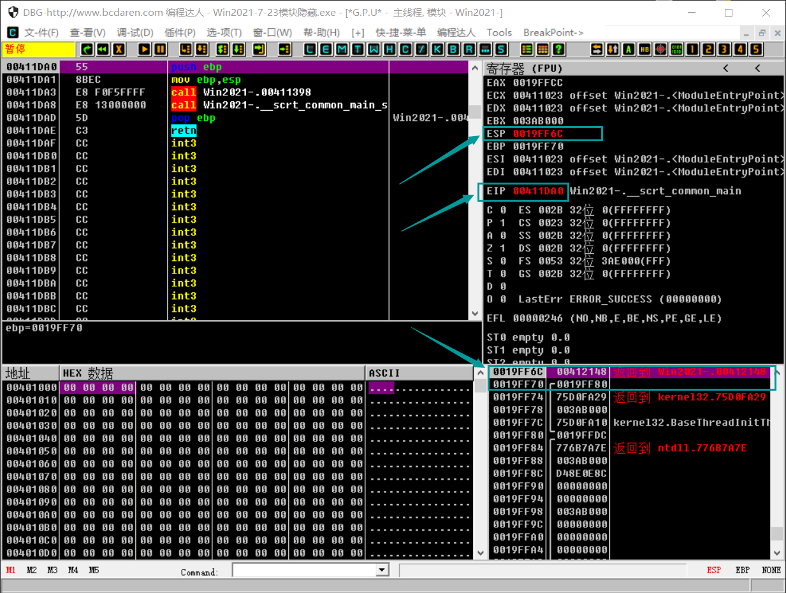
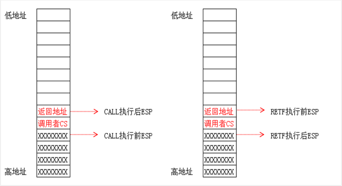
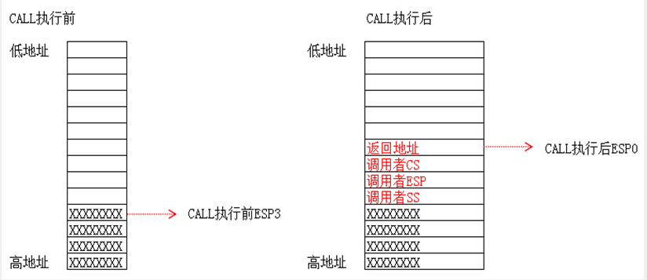

# 短调用
# 短调用指令格式
CALL 立即数 / 寄存器 / 内存
| 指令类型 | 指令例子 | 对应硬编码 |
|---|---|---|
| CALL 立即数 | call 52610610 | E8 F4560A52 |
| CALL 寄存器 | call eax | FFD0 |
| CALL 内存 | call dword ptr ds:[0x52610610] | FF15 10066152 |

关于 CALL 指令详细内容参见 https://www.52pojie.cn/thread-1379952-1-1.html
在 OllyDbg 中随便打开一个 EXE，执行 CALL 指令。
观察堆栈的变化。

单步执行后

对比前后的堆栈情况变化，可以发现：
短调用影响了 ESP 和 EIP 两个寄存器，并且会将返回地址压入到堆栈中
短调用通过 RET 指令返回
# 长调用
# 长调用指令格式
CALL FAR CS:EIP (EIP 是废弃的)
如： CALL FAR 002B:00610610
CALL 指令要调用的地址是由 CS 段选择子查 GDT 表得到的调用门 段描述符得来的，后面的 EIP 不发挥作用。
长调用可以分为两种：跨段不提权和跨段提权。
长调用通过 RETF 指令返回。
# 跨段不提权
所谓的跨段不提权就是指要跳转段和当前段的特权级别相同。
和短调用不同，长调用会先将 CS 压入堆栈，然后再将返回地址压入堆栈。
跨段不提权的长调用影响了 ESP EIP CS 三个寄存器，并且会将 CS 和返回地址压入到堆栈中。
堆栈变化图：

# 跨段提权
与跨段不提权相对，所谓的跨段提权就是指要跳转段和当前段的特权级别不同。
跨段提权的长调用 涉及到了权限的变化，一旦涉及到了权限的变化，堆栈也将随之切换，因此相比跨段不提权，还会影响 SS 寄存器。
跨段提权的长调用影响了 ESP EIP CS SS 四个寄存器，并且会将 SS、ESP、CS 和返回地址压入到堆栈中。
为什么要压入 SS 和 ESP？
因为当跨段提权时，堆栈会发生切换，压入 SS 和 ESP 是为了在调用结束后将堆栈恢复成原来的（切换前）的堆栈。
堆栈切换的来源是什么？
堆栈切换的来源是 TSS 段，这个留作之后再深入。
由 RING3 切换到 RING0 的跨段提权堆栈变化图

# 总结
跨段调用时，一旦有权限切换，就会切换堆栈
CS 的权限一旦改变，SS 的权限也要随着改变，CS 与 SS 的特权级别必须一致（INTEL 定义的规则）
JMP FAR 只能跳转到同级代码段，但 CALL FAR 可以通过调用门进行提权（提升 CPL 的权限）
# Reference
滴水中级课件
https://www.52pojie.cn/thread-1423894-1-1.html